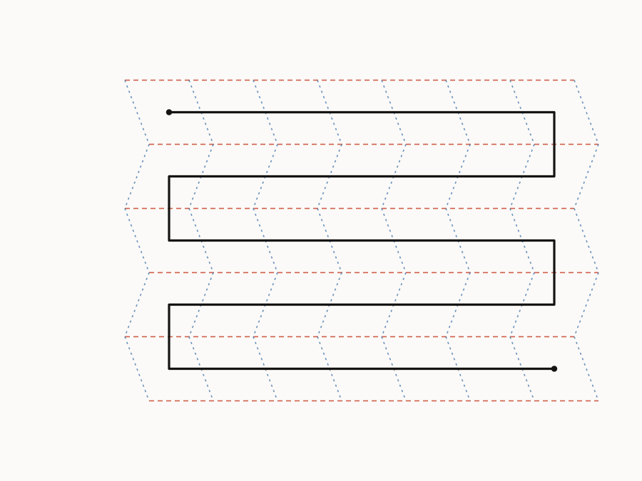

Here's a fact about FDM printing that's easy to underrate: print quality depends a lot on whether a layer is deposited as one continuous stroke. Every time the nozzle has to stop, retract, and travel somewhere else to resume, that's a place for stringing, blobbing, or a visible seam. The ideal infill pattern for a layer is one long, crossing-free, single stroke: the toolpath equivalent of drawing a shape without lifting your pen and without crossing your own line.
For arbitrary infill geometry, generating that stroke is a real graph problem, and the existing state of the art (Gupta, Krishnamoorthy, and Dreifus) solves it by force: it quadruples the edges of the infill graph (the "Euler transformation") until every vertex has even degree, which is the condition a graph needs to admit an Eulerian circuit: a closed walk that uses every edge exactly once. That works, but it's expensive: 4× the edges means a lot of mesh-refinement overhead before you've printed anything.
Flat-foldable origami crease patterns give you the even-degree condition for free, and the reason is a 40-year-old piece of origami math: Maekawa's theorem. It says that at every interior vertex of a flat-foldable crease pattern, the number of mountain folds minus the number of valley folds is always exactly ±2 (never 0, never 4, always 2). A vertex with, say, 3 mountains and 1 valley has degree 4. One with 4 mountains and 2 valleys has degree 6. Every valid combination that satisfies Maekawa's parity condition forces the vertex's total degree to be even.
Even degree at every vertex is exactly Euler's 1736 condition for a graph to have an Eulerian circuit. So a flat-foldable crease pattern's crease graph doesn't need to be transformed into an Eulerian graph: it already is one, as a structural consequence of being foldable at all. No refinement step, no quadrupled edges. You get the toolpath's basic shape for free just by choosing infill that happens to also be a valid origami tessellation (a Miura-ori pattern, for instance).

An Eulerian circuit guarantees you use every edge exactly once, but it doesn't guarantee the walk never crosses itself in the plane, and a self-crossing toolpath is exactly the kind of travel move you were trying to avoid. The graph-theoretic object for "Eulerian and crossing-free" is called an A-trail, and whether one exists depends on a per-vertex transition system: at each vertex, which pairs of edges does the walk connect as it passes through? Get the pairing right at every vertex simultaneously and the global walk never crosses itself.
This is where a flat-foldable pattern's mountain/valley assignment plausibly does double duty: the same assignment that makes the pattern fold flat might also fix a transition system that makes its Eulerian tour crossing-free, with no extra choices needed. Whether that connection holds in general, and how to patch it at a boundary (where clipping a tessellation to an arbitrary part outline creates odd-degree vertices), is the open research question this thesis is chasing down. See the project page for where that stands.